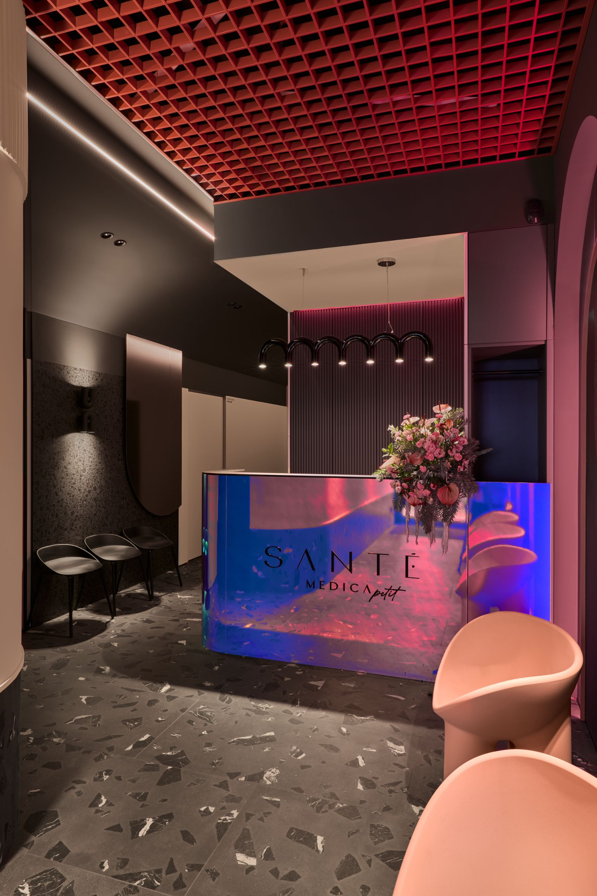

For International Patients
Advanced women’s health care in a discreet, private setting
Women’s health, regenerative gynecology and intimate surgery in Gdańsk, Poland.
Sante Medica is a private medical clinic in Gdańsk, Poland, focused on gynecology, regenerative gynecology, dermatology and intimate surgery. We support women seeking high-quality, discreet and evidence-informed care, including patients travelling from abroad.
Our team combines specialist medical expertise with an individual, respectful approach to women’s health, intimate wellbeing and quality of life.

Why patients choose Sante Medica
Private care with calm coordination before you travel
International patients often need clarity before making travel plans. We help you understand what type of consultation may be appropriate, what documents are useful and how the visit can be coordinated in Gdańsk.
Why patients choose Sante Medica
- private, discreet medical care in Gdańsk
- experienced gynecology and dermatology team
- regenerative gynecology and intimate health focus
- modern diagnostic and treatment technologies
- individual treatment planning
- English-speaking patient coordination
- convenient access from Scandinavia, the UK and other European countries
Areas of care
- gynecology consultations
- regenerative gynecology
- vaginal radiofrequency
- CO2-based intimate procedures
- labiaplasty
- vulvovaginal discomfort and dryness
- menopause-related intimate symptoms
- breast cancer survivorship-related intimate health concerns
- dermatology and dermatosurgery
- aesthetic medicine
A discreet pathway for international patients
- Initial contact by email or form
- Review of your medical concern and expectations
- Proposed consultation or treatment plan
- Appointment coordination
- Visit to Sante Medica in Gdańsk
- Follow-up recommendations after your stay
Important note
Every treatment plan is based on an individual medical consultation. Some procedures may require qualification, laboratory tests or additional diagnostics before treatment.
Contact
Contact our international patient coordinator
Tell us what you are looking for, and we will guide you through the next steps.